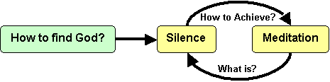

Silence
Any way to God has to be through silence.

Go beyond words and thoughts
- They describe a belief system
- Not awareness or Understanding
1) Understanding
- God is nothing like your ideas about God.
- Words are inadequate
- Describe the fragrance of a rose
- Cloud of Knowing book
- Know God through Unknowing
- Then grasp God with your heart
- Scripture: Not a description of God but a pointer in the
direction of God
- Bombay Signpost Analogy
- When the wise man points to the moon all the fool seas
is the finger.
2) Look, Listen, Hear, See
- God dances the world.
- Strangely we see the dance but do not recognize the dancer.
- God is in creation like the singer is in a song.
- Strangely we hear the song but do not hear the voice.
- See with Heart Seeing and Hear with Heart Hearing
- Japanese disciple claims the master is hiding secret to enlightenment.
They walk path and hear bird.
- Look at creation: Observe, Quiet, Silence Overtakes
- Do not activate the judgemental or categorizing centers of mind
- Look and maybe you will recognize.
- John 1:4 In him was life, and that life was the light of men.
John 1:5 The light shines in the darkness, but the darkness has not understood
it.
John 1:10 He was in the world and though the world was made through him, the
world did not recognize him.
3) Scriptures
- Finger pointing to moon.
- John 7:37 If anyone is thirsty, let him come to me and drink. Whoever believes
in me, streams of living water will flow from within him.
- Find a scripture and repeat small passage over and over until heart is
saturated. --> React.
- Read, Recite, and React --> Beyond and fall into Silence
- Recall scripture or have someone read to you.
- If become distracted read on and find another passage that resonates
in heart.
- Watch… and hopefully silence will be given to you. (Lie down, and hope
sleep is given)
- Exercise:
- Imagine Jesus is standing in front of you telling you short scripture:
- Let reverberate in heart, React, Hold, Speak.
- Come follow me.
- Peace, don’t be afraid.
- Do you love me.
- Story: (Shortest path between human and truth.)
- Temple on an island 2 miles from mainland.
- Island sank but legend says the bells still ring for those who can listen.
- Man tries for many months and gives up.
- Returns to coconut tree on beach and relaxes. Finally hears tinkling
of bell.
Look, Listen, and hopefully someday it will be given to you to see and recognize
in silence.